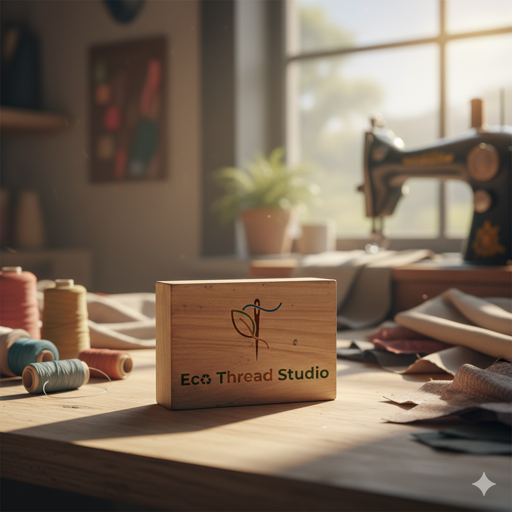

EcoThread Studios
Textile Upcycler • Small‑batch fashion
Converts old clothes and factory offcuts into premium tote bags, laptop sleeves and streetwear‑style apparel.
★4.9(86 reviews)
Textile Upcycler
- • Ideal waste: denim, cotton, canvas, deadstock rolls.
- • Min. quantity: 5 kg per design batch.
- • Lead time: 7‑15 days.
Contact
+91‑98765 43210